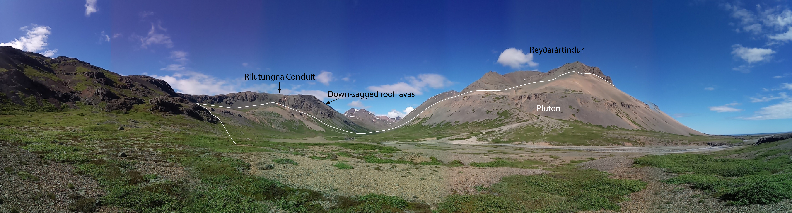

The granitic pluton of Reyðarártindur is exceptionally well exposed and easily accessible.
It displays a fairly homogeneous granitic composition except in a mixing zone along the river bed.
In the mixing zone other compositions of granite intermingle with the main granite body.
Another exceptional piece to this story, is the rítutungnafjall conduit;
a dyke can be seen eminating from the main body fo the pluton into the basalts above.
This is thought to be a conduit leading to the surface, the eruption caused downsagging of the surrounding basalts as the magma was released.
\
A lack of cooling contacts throughout the pluton indicates rapid magma emplacement and a thermal numerical model suggests
that the volume of potentially eruptible magma would have halved within 1000 years (Rhodes et al., 2021).
This implies that the connection between the enclave zone and the conduits only existed for a few hundred years.
Hence, the time between pluton construction and eruption was rapid, probably in the range of a few hundred years.
Rhodes et al. (2021; 2024); Twomey (2023); Padilla (2015)